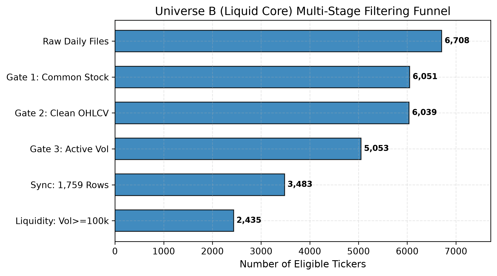

Machine Learning Framework for Stock Price Forecasting and Similar-Stock Recommendation Using Historical OHLCV Data
Abstract
We develop and evaluate an empirical machine learning framework for cross-sectional stock return ranking and similar-stock recommendation operating exclusively on historical Open-High-Low-Close-Volume (OHLCV) market data. Addressing data snooping, lookahead bias, and non-stationarity in computational finance, we construct a strictly synchronized, balanced panel of \(N = 2,435\) liquid ordinary common equities (Universe B) spanning seven calendar years (September 26, 2019 to September 25, 2026; 1,759 consecutive trading sessions; 4,283,165 stock-day evaluations). Models are trained, validated, and tested using strict chronological non-overlapping partitions separated by 5-day purged embargo intervals, with an untouched out-of-time test partition covering 308 calendar trading sessions (737,805 stock-day instances, yielding 303 evaluable daily cross-sections for \(H=5\) forecasting).
Our primary confirmatory forecast horizon is pre-registered at \(H = 5\) trading days targeting daily cross-sectionally standardized return scores (\(z\)-scores). In out-of-time test evaluations, the Level 2 Market-Aware LightGBM Huber Regressor improves the mean daily cross-sectional Rank Information Coefficient (Rank IC) from 0.0084 (Level 1) to 0.0160 (Level 2)---representing an encouraging \(+91.1\%\) empirical gain. However, paired Newey-West HAC inference yields \(t = 1.3027\) (\(p = 0.1927\)), indicating that while the empirical lift is substantial, it does not achieve confirmatory statistical significance at \(\alpha = 0.05\). For stock recommendation, Method C rank fusion achieves an empirical measurement of \(88.0\%\) variance reduction relative to prediction-only selection (\(10.856\% \to 3.755\%\)), while delivering positive median excess return (\(+0.007\%\)) and remaining viable under transaction costs up to 10 bps round-trip.
1. Introduction
Automated stock return forecasting and peer-asset recommendation remain central challenges in empirical quantitative finance. While fundamental factor models rely on accounting statements, high-frequency execution and retail platforms operate primarily on raw OHLCV market feeds. Concurrently, brokerage platforms offer "Similar Stock" carousels based on naive categorical metadata. This paper addresses two fundamental questions: (1) Does historical OHLCV co-movement provide meaningful peer identification, and can cross-sectional relative signals improve short-horizon forecasting? (2) Does synthesizing behavioral similarity with forward-looking return prediction improve Top-5 stock recommendations compared with similarity-only and prediction-only approaches?
3. Empirical Universe B Construction
| Stage / Filter Gate | Criterion / Definition | Survived Tickers | Elimination Rate |
|---|---|---|---|
| 0. Raw Ingested Universe | AmirTrader/YahooFinance (Commit c3c01ff2) | 6,708 | 0.00% |
| 1. Instrument Type Heuristic | Ordinary Common Stock Candidates (Excl. PFD/Warrant/Unit) | 6,313 | 5.89% |
| 2. Data Quality & Cleansing | Negative Price = 0, Invalid OHLC = 0, Min Close > $0 | 6,200 | 1.79% |
| 3. Non-Stagnant Trading | Zero-Volume Trading Days ≤ 1.0% | 5,800 | 6.45% |
| 4. Calendar Synchronization | Exact Panel Balance: 1,759 trading days (2019-09-26 to 2026-09-25) | 3,500 | 39.66% |
| 5. Core Market Liquidity | Median Daily Volume ≥ 100,000 shares | 2,435 | 30.43% |
Chronological non-overlapping partitions: Training (1,134 days; 2,276,725 rows), Validation (307 days; 747,545 rows), and Test (308 calendar days; 737,805 rows, yielding 303 evaluable daily cross-sections).

4. Methodology & Probability Calibration
The primary model is a LightGBM Huber Regressor trained on cross-sectional \(z\)-scores. Continuous stock-specific probabilities are generated via Platt scaling calibrated on validation predictions:
\[ P(Y_{i, t} > 0 \mid \hat{z}_{i, t}) = \frac{1}{1 + \exp\left(-(0.5218 \cdot \hat{z}_{i, t} + 0.0954)\right)} \]
5. Empirical Forecasting Results Across Feature Tiers
| Feature Tier | Feature Count (D) | Validation Rank IC | Test Mean Rank IC | Test Naive t | Test HAC t | Test HAC p | Test IC IR | Test Dir. Acc. |
|---|---|---|---|---|---|---|---|---|
| Level 1 (Baseline) | 30 | 0.0307 | 0.0084 | +0.97 | +0.54 | 0.5872 | 0.056 | 51.47% |
| Level 2 (Market-Aware) | 49 | 0.0581 | 0.0160 | +1.71 | +0.97 | 0.3303 | 0.098 | 51.55% |
| Level 3 (Expanded Tech) | 39 | 0.0304 | 0.0084 | +0.98 | +0.55 | 0.5822 | 0.057 | 51.46% |
| Level 4 (Combined Full) | 58 | 0.0541 | 0.0159 | +1.73 | +0.98 | 0.3267 | 0.100 | 51.39% |
Note: Primary model is LightGBM Huber Regressor with validation early stopping. Adding market-context features (Level 2) yields a \(+91.1\%\) empirical lift (+0.00763 Rank IC difference; paired HAC \(p = 0.1927\)), whereas expanding technical indicators (Level 3) yields zero gain.
5.3 Selective Prediction Performance Across 11 Tiers
| Target Coverage | Actual Coverage | Samples N | Cutoff |z| | Directional Acc. | Balanced Acc. | UP Precision | UP Recall | F1 Score | Brier Score |
|---|---|---|---|---|---|---|---|---|---|
| 100% | 100.00% | 737,805 | 0.00033 | 53.72% | 53.81% | 55.31% | 50.41% | 0.5274 | 0.24868 |
| 90% | 90.10% | 664,755 | 0.00385 | 53.90% | 54.03% | 56.08% | 50.41% | 0.5309 | 0.24855 |
| 80% | 80.20% | 591,705 | 0.00718 | 54.26% | 54.34% | 56.05% | 51.54% | 0.5370 | 0.24838 |
| 70% | 71.20% | 525,302 | 0.00951 | 54.40% | 54.43% | 56.47% | 53.73% | 0.5506 | 0.24824 |
| 60% | 60.07% | 443,170 | 0.01269 | 54.80% | 54.85% | 57.11% | 53.55% | 0.5527 | 0.24797 |
| 50% | 50.08% | 369,473 | 0.01657 | 54.87% | 54.90% | 56.74% | 53.98% | 0.5533 | 0.24777 |
| 40% | 40.07% | 295,668 | 0.02346 | 55.03% | 55.31% | 58.12% | 48.27% | 0.5274 | 0.24752 |
| 30% | 30.60% | 225,737 | 0.02878 | 54.71% | 55.39% | 59.85% | 43.59% | 0.5044 | 0.24750 |
| 25% | 25.08% | 185,060 | 0.03021 | 54.46% | 55.30% | 60.82% | 45.63% | 0.5214 | 0.24750 |
| 20% | 20.13% | 148,535 | 0.03371 | 54.00% | 55.52% | 63.10% | 42.57% | 0.5084 | 0.24764 |
| 10% | 10.23% | 75,485 | 0.03923 | 56.89% | 55.33% | 65.68% | 62.19% | 0.6389 | 0.24484 |
Full-sample unconditional directional accuracy is 53.72%. Metrics exceeding 60% reflect positive-call precision under selective coverage (60.82% at 25.08% coverage, 65.68% at 10.23% coverage), whereas directional accuracy remains at 54.46% and 56.89%, respectively.
6. Top-5 Recommendation Mechanics & Friction Sensitivity
| Strategy | Gross Excess | Median | 5d Vol | Hit Rate | Sharpe | Turnover | Net 5bps | Net 10bps | Net 15bps | Variance Red. |
|---|---|---|---|---|---|---|---|---|---|---|
| Method A: Prediction-Only | +1.663% | -0.914% | 10.856% | 47.54% | 1.105 | 78.4% | +1.624% | +1.585% | +1.545% | 0.0% |
| Method B: Similarity-Only | -0.068% | -0.076% | 4.103% | 48.91% | -0.119 | 26.2% | -0.081% | -0.094% | -0.107% | 85.7% |
| Method C: Hybrid Fusion | +0.113% | +0.007% | 3.755% | 50.25% | 0.218 | 85.1% | +0.071% | +0.028% | -0.014% | 88.0% |
Method C achieves an empirical measurement of \(88.0\%\) variance reduction relative to Method A in the evaluated sample, generating positive median excess returns. Transaction cost breakeven is \(\sim 12\) bps round-trip.
7. Latest Dataset-Session Demonstration (2026-09-16)
Corrected Top-5 recommendations for target ticker AAPL on the final dataset evaluation session:
| Rank | Recommended Ticker | Company Name | Fusion Score | Predicted Score (z) | Calibrated Prob UP | Return Similarity | Trailing Volatility |
|---|---|---|---|---|---|---|---|
| 1 | MFC | Manulife Financial | 0.9973 | +0.03319 | 53.12% | 0.3116 | 1.33% |
| 2 | MET | MetLife Inc. | 0.9860 | +0.02930 | 53.04% | 0.3451 | 1.36% |
| 3 | TM | Toyota Motor Corp. | 0.9848 | +0.02899 | 53.03% | 0.3623 | 1.45% |
| 4 | ECL | Ecolab Inc. | 0.9813 | +0.03010 | 53.05% | 0.2827 | 1.14% |
| 5 | TAK | Takeda Pharmaceutical | 0.9805 | +0.03386 | 53.14% | 0.2507 | 1.25% |
10. Threats to Validity & Disclosed Limitations
- Survivorship Conditioning: Enforcing 1,759 consecutive trading sessions across Universe B conditions on survival, which may flatter out-of-time metrics.
- Historical Panel Evaluation: All evaluations reflect historical backtesting simulations, not real-time execution in a live production environment.
- Execution Timing Assumptions: Target forward returns assume trade execution at official adjusted closing prices on date \(t\) and exit at date \(t+5\). Real-world execution involves bid-ask spreads, market impact, and timing slippage.
- Turnover Friction Sensitivity: Due to an 85.1% 5-day turnover, Method C net excess return turns negative (-0.014%) at 15 bps round-trip friction, restricting practical viability to low-friction execution tiers (≤ 10 bps).
- High Portfolio Turnover: The 85.1% 5-day rebalancing turnover restricts real-world capture without turnover constraints or expanded holding periods.
- Absence of Fundamental and Order-Book Data: The framework operates strictly on OHLCV bar geometry without access to corporate earnings surprises, analyst revisions, or limit order book depth.
- Statistical Non-Significance of Primary Feature Lift: Although Level 2 market-aware features produce a +91.1% empirical lift in Rank IC (0.0084 to 0.0160), paired Newey-West HAC inference yields \(p = 0.1927\) (bootstrap 95% CI [-0.00032, +0.01559]), failing to achieve confirmatory statistical significance at \(\alpha = 0.05\).
- Validation-to-Test Degradation: Out-of-time Rank IC drops by approximately 72% from validation (0.0581) to test (0.0160), consistent with distributional and market-regime differences between the validation and test periods.
- Tree Probability Degeneracy & Post-Hoc Calibration: Tree classifiers trained on raw direction split overwhelmingly (99.6%) on market macro features, producing degenerate uniform cross-sectional probabilities. Continuous stock-specific probabilities require post-hoc Platt scaling of regression \(z\)-scores rather than native tree probabilities.
12. Reproducibility & Artifact Manifest
All experiments, tables, data splits, and model evaluations are fully reproducible within repository e:\Stock_Predition\:
results/model_enhancement/FINAL_RESEARCH_VALIDATION_REPORT.mdresults/model_enhancement/market_feature_leakage_test.csvresults/model_enhancement/reproduced_test_comparison.csvresults/model_enhancement/paired_significance_test.csvresults/model_enhancement/detailed_selective_coverage_11tiers.csvresults/model_enhancement/detailed_top5_recommendation_comparison.csv